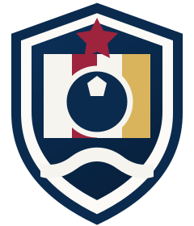

Revisa tu equipo
Comprueba nombre, escudo, categoría, plantilla, próximos partidos y competición. Si está bien, sigue adelante. Si falta algo, podrás completarlo después.
Normalmente ya preparadoMonEquip está pensado para ahorrarte trabajo. Cuando los datos están disponibles, podemos incorporar automáticamente la información del equipo y de su competición. Tú revisas, completas lo necesario, invitas a tu gente y empiezas a usarlo.

MonEquip es una web app instalable. La primera vez entras desde un enlace; después puedes añadirla a la pantalla de inicio y abrirla desde su propio icono, como cualquier otra app.
Activa las notificaciones cuando MonEquip te lo pida. Así recibirás convocatorias, recordatorios y avisos del equipo.
Para utilizar MonEquip, el equipo tiene que estar dado de alta. Con el alta podemos preparar tu equipo, conectar los datos disponibles y darte acceso a la app.
Siempre que la competición y la fuente de datos lo permitan, MonEquip puede incorporar y mantener actualizados automáticamente equipo, plantilla, partidos, jornadas, resultados, clasificación y otros datos de competición.
La idea es simple: MonEquip hace el trabajo pesado. Tú revisas lo que ya está cargado y completas únicamente lo que depende del día a día de tu equipo.
Comprueba nombre, escudo, categoría, plantilla, próximos partidos y competición. Si está bien, sigue adelante. Si falta algo, podrás completarlo después.
Normalmente ya preparadoInvita al staff y a los jugadores que necesiten acceso. Puedes completar la plantilla aunque algunas personas todavía no tengan cuenta.
Lo haces túAñade horarios habituales de entrenamiento, ubicaciones y otros datos que una fuente externa no puede conocer.
Solo lo necesarioDefine cuánto antes se lanzan, la hora de convocatoria, la fecha límite y los recordatorios para quienes sigan pendientes.
Se mantiene para los siguientes partidosMonEquip ya funciona sin tocar nada más. Si quieres, después puedes ajustar colores, lema y otros detalles para hacerlo todavía más tuyo.
OpcionalCon el equipo revisado, las personas dentro y los horarios completados, ya puedes trabajar con entrenamientos, convocatorias y competición.
ListoCuando hay una fuente de datos compatible, MonEquip puede traer la información disponible y mantenerla actualizada. Tu trabajo es revisar y completar, no volver a escribir lo que ya existe.
La disponibilidad, frecuencia y nivel de automatización dependen del deporte, competición y fuente de datos.No hace falta leer esta parte entera para empezar. Úsala como referencia cuando quieras configurar o revisar una función concreta.
Los entrenadores, ayudantes y delegados pueden formar parte del staff sin tener que ser jugadores. El administrador controla quién puede gestionar el equipo y puede añadir coadministradores para compartir la gestión.
Comprueba que el entrenador principal y las personas que realmente gestionarán el equipo estén correctamente añadidas. Después podrás ajustar quién tiene permisos de administración.
Los datos personales de menores no deben utilizarse como datos de contacto del staff.
La plantilla puede llegar ya cargada si la competición publica esos datos. Revisa nombres, dorsales y posiciones, y completa únicamente lo que falte.
Desde la gestión de plantilla puedes generar o compartir accesos. No es necesario que todos tengan cuenta para que la plantilla esté completa.
Los invitados externos pueden añadirse para una convocatoria sin convertirlos en miembros habituales del equipo.
Configura los días habituales, hora de inicio y fin y ubicación. Después MonEquip puede mostrar automáticamente los próximos entrenamientos.
Una vez configurada la lógica habitual, MonEquip la reutiliza para los siguientes partidos hasta que decidas cambiarla.
El administrador puede ver y corregir el estado de toda la plantilla. Los demás miembros ven la información necesaria para su propio caso, evitando controles que no les corresponden.
La conexión inicial con la competición la prepara MonEquip al dar de alta el equipo. El administrador no tiene que buscar identificadores ni configurar integraciones técnicas.
Según la competición: clasificación, jornadas, resultados, goleadores/as y ficha de partido. Los datos se sincronizan cuando la fuente lo permite.
Si detectas un dato incorrecto o incompleto, puedes comunicarlo para revisarlo o corregir puntualmente lo que proceda.
Activa las notificaciones para recibir avisos importantes. El equipo puede utilizar el chat con permisos definidos por el administrador y los adultos pueden indicar un teléfono de contacto si quieren estar disponibles por WhatsApp.
El administrador puede decidir quién escribe, dejar grupos en solo lectura o abrir temporalmente la escritura durante 12 o 24 horas.
Con un solo equipo no necesitas selector. Con dos equipos puedes alternar rápidamente; con más equipos tendrás un selector para entrar en el que necesites.
El equipo puede funcionar sin tocar esta parte. Si quieres, puedes adaptar escudo, colores, lema y otros detalles para que MonEquip tenga todavía más identidad propia.
Si todo esto está listo, ya puedes trabajar con MonEquip en el día a día.
Comprueba que estás utilizando el mismo correo con el que se generó o autorizó tu acceso. Si el problema continúa, contacta con el administrador del equipo.
Los datos automáticos dependen de la información publicada por la competición. El administrador puede completar la plantilla y comunicar cualquier dato que necesite revisión.
La sincronización depende de cuándo la fuente publica los datos. Si la información ya es oficial y sigue sin aparecer, conviene comunicarlo para revisar la sincronización.
Comprueba que las notificaciones están activadas tanto dentro de MonEquip como en los ajustes del navegador o del sistema del teléfono.
Vuelve a abrir tu enlace de acceso, inicia sesión e instala MonEquip de nuevo siguiendo los pasos de esta guía.
Da de alta tu equipo y deja que MonEquip prepare todo lo que pueda por ti.